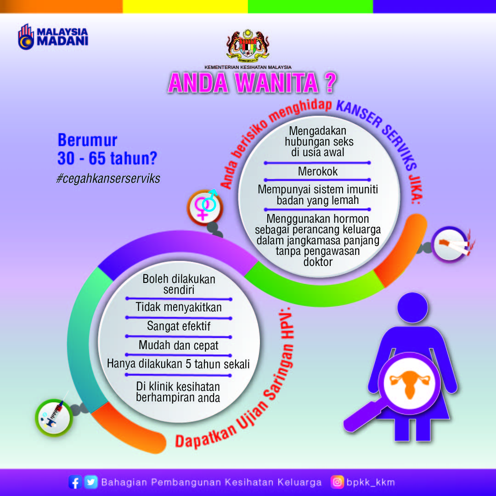

Masukkan maklumat ringkas untuk panduan awal. Pilih daerah dan cari Klinik Kesihatan berhampiran melalui Google Maps.
Isi umur, jarak masa sejak Pap smear, dan pilih daerah.
Pastikan fail gambar dinamakan infografik-hpv.jpg dan berada dalam folder yang sama dengan index.html.

Video akan dipaparkan automatik (YouTube embed).
HPV (Human Papillomavirus) ialah virus yang biasa. Terdapat lebih 100 jenis HPV dan sebahagiannya adalah berisiko tinggi yang dikaitkan dengan kanser serviks.
HPV boleh berjangkit melalui sentuhan kulit ke kulit dan melalui hubungan seksual. Jangkitan boleh berlaku walaupun tanpa gejala jelas.
Ujian HPV positif bermaksud anda telah terdedah kepada satu atau lebih jenis HPV berisiko tinggi. Ujian positif tidak bermakna anda telah menghidap prakanser atau kanser serviks, tetapi menunjukkan anda berisiko mengalami kelainan pada sel-sel serviks dan memerlukan pemeriksaan/rawatan susulan.
Sekiranya ujian positif, dapatkan pemeriksaan lanjut di klinik atau hospital. Sekiranya ujian negatif, risiko adalah sangat rendah dan saringan biasanya diulang setiap lima tahun.
Walaupun negatif, anda masih berisiko jika terdedah kepada faktor risiko seperti:
Saringan berkala tetap penting mengikut saranan semasa.